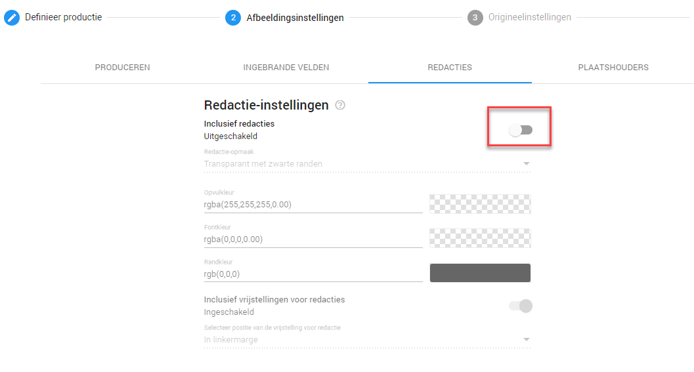

Indien u de documenten wilt produceren zonder aflakkingen, voor bijvoorbeeld uw eigen archief, kunt u dit doen door de stappen te volgen uit het topic Documenten produceren met permanente aflakking en inventarislijst. Echter ditmaal zet u de redacties uit bij de Afbeeldingsinstellingen.

Indien u geen inventarislijst wenst kunt u de stappen bij Load file overslaan.